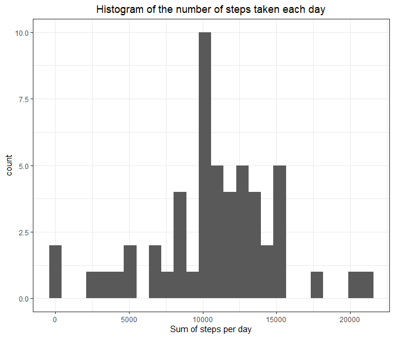
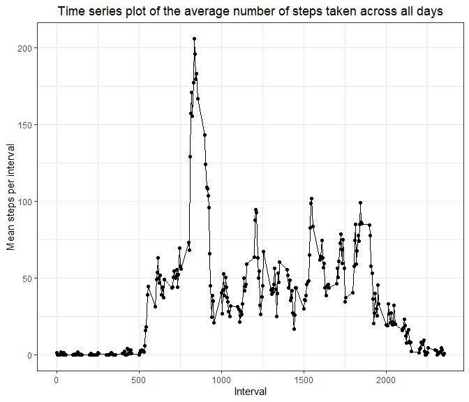
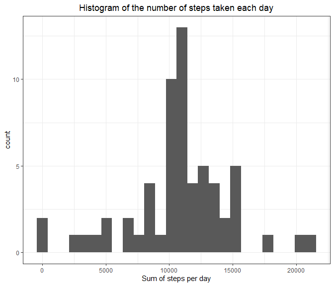
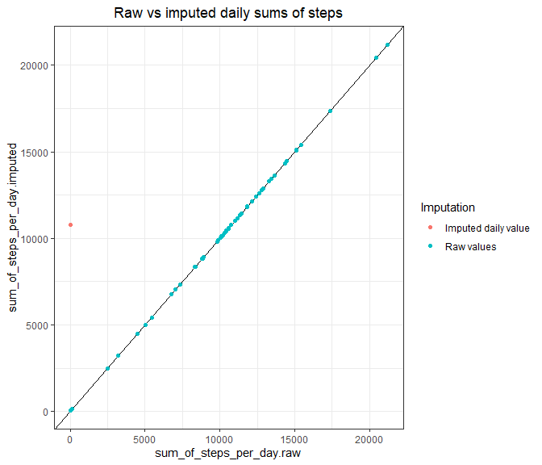
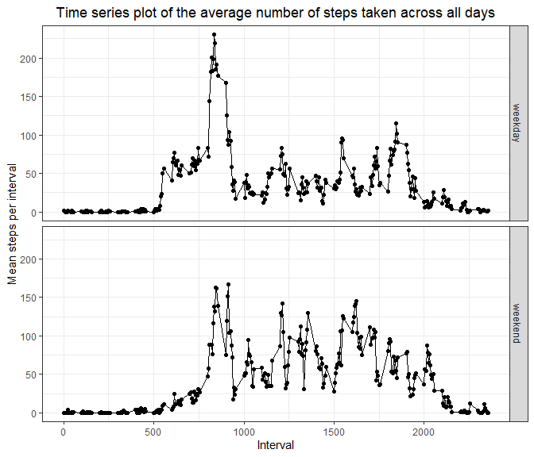

# Global R markdown code chunk options
knitr::opts_chunk$set(message=FALSE,
warning = FALSE,
error=FALSE,
echo=TRUE,
cache=FALSE,
fig.width = 7, fig.height = 6,
fig.align = 'left')library(data.table)
library(ggplot2)
unzip("activity.zip")
data <- read.csv("activity.csv")
# Converting to a data.table object, omitting missing values (NA)
DT <- data.table(na.omit(data))For this part of the assignment, you can ignore the missing values in the dataset.
# sum(is.na(data$steps)) / length(data$steps) 13% of step records are missing
df <- DT[, .(sum_of_steps_per_day = sum(steps)), by=list(date)]
ggplot(df, aes(x=sum_of_steps_per_day))+
geom_histogram(bins = 26)+
theme_bw()+
labs(title = "Histogram of the number of steps taken each day",
x = "Sum of steps per day")+
theme(plot.title = element_text(hjust = 0.5))
mean_n_of_steps <- mean(df$sum_of_steps_per_day)
median_n_of_steps <- median(df$sum_of_steps_per_day)The mean number of steps taken each day is 10766.19, and the median is 10765
Make a time series plot (i.e. type = “l”) of the 5-minute interval (x-axis) and the average number of steps taken, averaged across all days (y-axis)
df <- DT[, .(mean_steps = mean(steps)), by=list(interval)]
ggplot(df, aes(x = interval, y = mean_steps))+
geom_point()+
geom_line()+
theme_bw()+
labs(title = "Time series plot of the average number of steps taken across all days",
x = "Interval",
y = "Mean steps per interval")+
theme(plot.title = element_text(hjust = 0.5))
as.numeric(df[which.max(df$mean_steps), 1])On average, interval 835 contains the maximum number of steps.
Note that there are a number of days/intervals where there are missing values (coded as NA). The presence of missing days may introduce bias into some calculations or summaries of the data.
sum(as.numeric((is.na(data))))## [1] 2304The total number of rows containing NAs is 2304
Devise a strategy for filling in all of the missing values in the dataset. The strategy does not need to be sophisticated. For example, you could use the mean/median for that day, or the mean for that 5-minute interval, etc
# Calculates mean activity per interval, which will be used to fill in missing values
df <- DT[, .(mean_steps = mean(steps)), by=list(interval)]
#sum(is.na(df)) # No NA values# Replaces missing values with mean interval values
data_imp <- merge(data, df, by = "interval", all.x = TRUE)
data_imp$steps <- ifelse(is.na(data_imp$steps), data_imp$mean_steps, data_imp$steps)
#Sanity check. There are no missing values in the imputed dataset.
sum(is.na(data_imp))## [1] 0DT <- data.table(na.omit(data_imp))
df <- DT[, .(sum_of_steps_per_day = sum(steps)), by=list(date)]
ggplot(df, aes(x=sum_of_steps_per_day))+
geom_histogram(bins = 26)+
theme_bw()+
labs(title = "Histogram of the number of steps taken each day",
x = "Sum of steps per day")+
theme(plot.title = element_text(hjust = 0.5))
mean_n_of_steps_imp <- mean(df$sum_of_steps_per_day)
median_n_of_steps_imp <- median(df$sum_of_steps_per_day)The mean number of steps taken each day in the imputed data is 10766.19, and the median is 10766.19
Only the median value is slightly different, and now is equal to the mean value. Overall, the process of data imputation did not have a major effect on the data.
DT <- data.table(data)
df <- DT[, .(sum_of_steps_per_day = sum(steps)), by=list(date)]
DT <- data.table(data_imp)
df_imp <- DT[, .(sum_of_steps_per_day = sum(steps)), by=list(date)]
df_merged <- merge(df, df_imp, by = "date", all.y = TRUE)
colnames(df_merged) <- c("date", "sum_of_steps_per_day.raw", "sum_of_steps_per_day.imputed")
df_merged$Imputation <- ifelse(is.na(df_merged$sum_of_steps_per_day.raw), "Imputed daily value", "Raw values")
df_merged$sum_of_steps_per_day.raw <- ifelse(is.na(df_merged$sum_of_steps_per_day.raw), 0 , df_merged$sum_of_steps_per_day.raw)
ggplot(df_merged, aes(x = sum_of_steps_per_day.raw, y = sum_of_steps_per_day.imputed, color = Imputation))+
geom_abline(intercept = 1)+
geom_point()+
theme_bw()+
labs(title = "Raw vs imputed daily sums of steps")+
theme(plot.title = element_text(hjust = 0.5))
# Testing how many values of the sum of steps per day repeat in the imputed data set. These values were assigned in a process of imputation to days consisting only of NAs.
sum(df_merged$Imputation == "Imputed daily value")## [1] 8The only missing values in a data set occur over the entire 8 days. Therefore, the implemented method of data imputation did not have any effect on other days. This is represented by perfect correlation of the raw vs imputed sums of steps. The imputed missing days have a value of the overall mean sum of steps. To visualize them I arbitrarily assigned to them a value of 0 sum_of_steps_per_day.raw.
For this part the weekdays() function may be of some help here. Use the dataset with the filled-in missing values for this part.
data_imp$weekday_type <- factor(ifelse(weekdays(as.Date(data_imp$date)) %in% c("Saturday", "Sunday"), "weekend", "weekday"))DT <- data.table(data_imp)
df <- DT[, .(mean_steps = mean(steps)), by=list(interval, weekday_type)]
ggplot(df, aes(x = interval, y = mean_steps))+
geom_point()+
geom_line()+
theme_bw()+
labs(title = "Time series plot of the average number of steps taken across all days",
x = "Interval",
y = "Mean steps per interval")+
theme(plot.title = element_text(hjust = 0.5))+
facet_grid(weekday_type ~.)